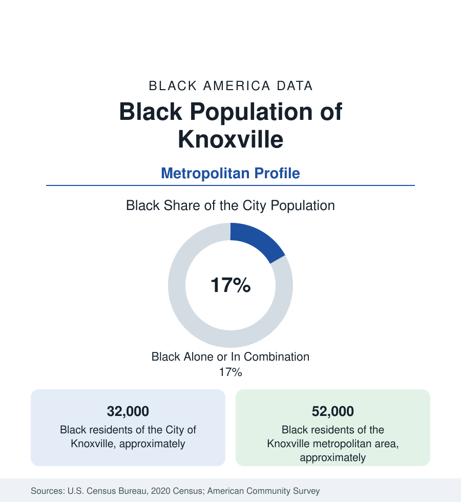

Black Cities
Black Knoxville: East Tennessee's Marble City
Knoxville holds about 32,000 Black residents in the city and 52,000 across the metro — East Tennessee's largest Black community, from Beck's archive to the Sunsphere. The census profile.

Knoxville holds about 32,000 Black residents within the city — Black alone or in combination, roughly a sixth of its 190,000 people — and about 52,000 across the metropolitan area. East Tennessee's mountains framed a different Southern pattern here: a smaller enslaved population than the plantation belts, a Unionist region's divided loyalties — and a Black community that built, in East Knoxville, the institutional world this profile surveys: the Beck Cultural Exchange Center's archive city, Knoxville College's hill, and the neighborhoods along the old commercial east.
East Knoxville, the Bottom, and Knoxville College
The geography concentrates east of downtown: East Knoxville along Martin Luther King Jr. Avenue and Asheville Highway — the Five Points commercial district (the community's retail heart in the Jim Crow decades, its redevelopment a standing file), Burlington, Park City, and the Vine Avenue corridor near downtown where the Black business district stood before urban renewal's clearances (the renewal file here is documented in Beck's archive: the Mountain View and Riverfront-Willow projects that displaced the community's core in the 1950s–70s, the city's acknowledged chapter). Knoxville College (1875, founded by the United Presbyterian church on the northwest hill — the HBCU whose enrollment contracted to a fragile remnant in the modern data, its campus and its preservation a live community cause) anchors the west, and the Mechanicsville and Western Heights neighborhoods hold the public-housing and working-class file alongside Lonsdale. The Beck Cultural Exchange Center — named for James and Ethel Beck, in the East Knoxville mansion the couple made the community's gathering place — serves as the archive and museum of the whole record, the institution the historians cite as East Tennessee's Black memory.
The University, the Labs, and the Government Payroll
The employment data run on East Tennessee's federal-academic complex: the University of Tennessee's flagship (the state's land-grant giant above the river — its Black enrollment and faculty files a standing diversity ledger, its hospital in the medical district), the Tennessee Valley Authority's headquarters (the New Deal agency born in this valley, its downtown towers a government anchor), Oak Ridge's laboratory complex a half-hour west (the Y-12 and ORNL payrolls — whose wartime founding segregated the atomic city by design, its Black workers bused from Knoxville's neighborhoods in the Manhattan Project's own file), the city and county schools, and the logistics and manufacturing corridor along the interstates. The indicators record the Appalachian-foothill pattern: incomes below the national band, Black poverty concentrated in the eastern districts at rates the university's growth has not reached, homeownership in the eastern suburbs (Holston Hills' edges, the Washington Pike corridor) and the westward drift toward Farragut's county line marking the middle-class file. Pellissippi State's campuses carry the workforce-training tier.
The Cultural and Political File
The cultural entries are specific: the Bijou and the Gem Theatre's Chitlin' Circuit memory downtown, the Knoxville Opera and the Rossini Festival's city on one side of the ledger, and on the other the gospel and soul scene of the eastern churches — with Alex Haley's roots in nearby Henning and his years in the region as the literary dateline, and Nikki Giovanni's Knoxville girlhood (the poet's 'Knoxville, Tennessee' an anthology standard) as the community's own verse. The political data show a dispersed-share pattern: county and city offices contested from district bases in the east, the school board's equity files, and the 1960 sit-in movement's Knoxville chapter (the Gay Street lunch counters, the students of Knoxville College and UT) in the movement record. The World's Fair of 1982 (the Sunsphere still standing) and the Old City's revival mark the downtown that renewal made.
Change and the Estimates
The estimates show the metro growing on the region's amenity and remote-work in-migration — Maryville and the Blount County suburbs booming, Oak Ridge's lab expansions in the series — its Black population growing modestly in count, its share diluted to the metro's edges, its East Knoxville files (the Five Points village redevelopment, the baseball stadium district rising at the old east edge — the Smokies' downtown ballpark opened in the current era, its jobs-and-displacement questions standard) as the live chapters.
Reading the Knoxville Numbers
Knoxville's 52,000 metro Black residents are East Tennessee's Black capital by default of geography: an archive named Beck, a college on the hill, an atomic paycheck a half-hour west, and a community that urban renewal scattered and East Knoxville kept. The mountain South's pattern in one profile — smaller numbers, same architecture of endurance.
More in Black Cities
Black Atlanta: Population, Distribution, and Growth of a Black Metropolis
Metro Atlanta holds more than two million Black residents — roughly one in three, second only to New York. The suburban distribution, migration history, and composition of Black Atlanta in the census data.
Black New York: The Largest Black Population in America
The New York metropolitan area holds about 3.4 million Black residents — more than any metro in the nation — and the city itself about two million. The census profile.
Black Washington: The District and the Metro
The Washington metro holds about 1.6 million Black residents, and the District itself — long a majority-Black city — now records a Black share near 41 percent. The census profile.
Source: U.S. Census Bureau, 2020 Census; American Community Survey; Population Estimates Program.